Cloud Cost Optimization for DevOps: Performance, Reliability, and Rollout Patterns
Part 3 covers throughput strategy, provider-safe rate handling, resilience behavior, and restricted-network rollout patterns.
Technical Whitepaper Series
Read in order for full context: architecture -> data model -> performance -> quality gates -> platform roadmap.
Part 2 established deterministic findings. Part 3 asks the operational question: does that model still hold when scans run at scale, under API quotas, through proxies, and during partial failure conditions?
This chapter focuses on cloud cost optimization for devops teams that need repeatable scans, not one-off benchmark numbers, while still integrating with cloud cost management software and cloud cost reporting automation workflows.
When cloud cost optimization for devops is treated as a weekly operating loop, throughput tuning, reliability controls, and rollout guardrails become directly auditable.
From model integrity to runtime integrity
In Part 2, we required deterministic policy behavior. This chapter focuses on runtime behavior that preserves that determinism under stress. In Part 4, we map those runtime expectations to explicit QA and release gates.
1. Performance budget: what âfast enoughâ means in cloud governance
For governance tooling, speed is constrained by two external realities: provider rate limits and network variability. "Fast" is not peak request burst; "fast" is stable completion of a full review cycle without triggering throttling storms or producing unreliable partial output.
We treat performance as a budgeted system:
- API request concurrency per provider/account segment.
- Retry and backoff windows by error class.
- Scan timeout ceilings to prevent indefinite hangs in restricted paths.
- Degraded-mode output rules when a subset of providers fails.

Figure 3-1 is the operating baseline for this chapter: throughput is budgeted by provider-aware concurrency, reliability is enforced by explicit failure classes, and rollout expands only after constrained-path verification.
In other words, throughput, reliability, and rollout are one control loop rather than three independent tuning knobs.
2. Throttling-safe concurrency strategy
Cloud APIs are not homogeneous. One provider endpoint might allow aggressive pagination while another enforces strict request windows. Instead of one global concurrency number, CWS uses provider-aware pacing and adaptive backoff based on observed error patterns.
Operationally this means:
- Concurrency is set to preserve completion probability, not benchmark screenshots.
- Rate-limit events are classified separately from transport failures and permission failures.
- Backoff policy is predictable and visible, so operators can explain slower scans without guessing.
This discipline prevents the classic anti-pattern where a tool appears fast in small test accounts but collapses under enterprise account fan-out.
3. Reliability model: partial failure without silent data corruption
Reliability in this context means preserving decision quality when failures are partial. If one provider or region times out, the engine should still return valid findings for reachable scope and mark missing segments explicitly.
- Stage/reason classification: failures carry structured context (for example: proxy_connect, target_connect, config_validate).
- Partial-result mode: completed scopes are emitted with clear gaps, not silently dropped.
- Retry policy: transient transport failures are retried; deterministic config failures are surfaced immediately.
- Operator diagnostics: logs and UI surfaces map failure class to next action.
This avoids a common governance risk: teams acting on an incomplete scan while believing it was complete.
4. Restricted-network rollout patterns
Enterprise environments often require explicit egress control, proxy segmentation, and audited route decisions. The product supports this by separating scan path and notification path, allowing operators to align each channel with policy.

Practical rollout pattern:
- Validate local API runtime and token flow.
- Validate proxy reachability to provider endpoints in scope.
- Run small-scope baseline scan with explicit account subset.
- Expand scope gradually while monitoring rate-limit and timeout classes.
- Lock a repeatable profile for weekly governance review.
That progression is slower than one-click full-scope scans, but it dramatically reduces false negatives and rollout rollback cycles.
5. Case study: scan stability beats burst speed
In one internal validation path, a high-concurrency test produced shorter elapsed time on first run but generated unstable retry storms and inconsistent completion in later runs. A lower concurrency setting increased median elapsed time but produced deterministic completion and cleaner failure diagnostics. For governance workflows, the second profile is the one that scales operationally.
Why this matters to business outcomes: review meetings depend on trusted evidence at a known cadence. A faster-but-erratic scan is operationally more expensive than a slower predictable scan because teams lose confidence in findings and re-run jobs manually.
6. Zero-agent runtime implications
Zero-agent architecture removes cloud-side deployment overhead and reduces the risk surface of long-lived in-cloud collectors. The tradeoff is that endpoint hardening and runtime governance are now clearly customer-side responsibilities. This is an explicit design choice, not an omission.
Operational implications include:
- Endpoint patching and local credential hygiene remain mandatory.
- Proxy and route policy become first-class rollout controls.
- Execution evidence must include runtime context for audits.
7. Measurement and evidence discipline
Performance claims should be tied to repeatable method, not headline numbers. Our baseline method records scope size, provider mix, network policy profile, timeout/retry parameters, and completion status classes. This is enough to compare profiles honestly without pretending there is one universal scan speed.
For external technical review, report these metrics together:
- Scope size (accounts/projects and resource families).
- Completion ratio per provider.
- Rate-limit and timeout incidence by stage/reason.
- Median and p95 scan duration under fixed profile.
Rollout playbook appendix: repeatable sequence for constrained environments
Many rollout failures are sequence failures, not software failures. Teams start with full scope, hit proxy gaps, trigger provider throttling, then conclude the tool is unstable. A stable sequence is more reliable: start narrow, confirm transport assumptions, then expand scope with measurable control points. For practical rollout we recommend a five-phase ladder.
Phase 1: Runtime sanity. Validate local API health, token behavior, and baseline logging before any provider scan. If local runtime checks fail, provider debugging is wasted effort.
Phase 2: Network path validation. Validate proxy and direct routes per provider group. Record route policy explicitly. Mixed environments often require one path for provider APIs and another for notifications.
Phase 3: Pilot scope. Scan a small, representative account group that includes at least one expected finding category (for example idle compute or unattached storage). This confirms end-to-end evidence generation.
Phase 4: Controlled expansion. Increase account scope gradually while monitoring stage/reason failure distribution and scan completion ratio. Do not increase scope and concurrency simultaneously; that masks root causes.
Phase 5: Governance lock-in. Once behavior is stable, freeze a baseline profile for weekly operations. Changes to concurrency or timeout should follow the same change protocol as policy updates.
For reliability, record an operations baseline after each phase: scope size, completion ratio, median duration, top failure classes, and remediation notes. This baseline history becomes invaluable when incidents occur months later. Without it, teams rely on memory and anecdote.
Another practical point is communication: report degraded scans as degraded, not failed or successful. A degraded scan can still provide useful findings if missing scope is explicit. This distinction helps stakeholders make informed decisions instead of all-or-nothing reactions.
Lastly, avoid "hero tuning" by a single operator. Every runtime profile should be reproducible by another team member with the same documented configuration. If only one person can keep scans stable, reliability is fragile regardless of software quality.
Implementation FAQ: performance and reliability operations
Q: Should we always increase concurrency to reduce scan time? No. Increase only when completion ratio and failure-class distribution remain stable. Faster scans with unstable completion are usually a net loss for weekly governance.
Q: How do we classify timeout incidents quickly? Use stage/reason grouping first: transport path issue, target endpoint issue, or configuration issue. This narrows remediation faster than provider-by-provider guessing.
Q: When should we mark a run degraded instead of failed? Mark degraded when a subset of scope completed with valid evidence and missing scope is explicit. Mark failed when core evidence integrity is compromised or completion is too low for safe decision-making.
Q: How do we prevent repeated rollout regressions? Keep a baseline profile artifact and require explicit approval for runtime parameter changes. Most regressions come from silent profile drift rather than code defects.
Q: What do technical buyers care about most here? Predictable completion and explainable failure handling. Buyers accept slower scans when they can trust outputs and recovery paths.
Field notes: reliability patterns from rollout practice
In constrained environments, the most common false diagnosis is confusing connectivity success with scan success. A health check can pass while deep scan calls fail against region-specific or service-specific endpoints. Teams should test representative endpoints during pilot, not only a single status route. Another pattern is timeout inflation as a substitute for root-cause analysis. Raising timeouts can hide route misconfiguration and extend incident duration. Prefer stage/reason triage first, then adjust timeout and concurrency with measured intent.
A practical operating pattern is "one change per run" during rollout: change either scope, network route, concurrency, or timeout, but not multiple dimensions at once. This keeps cause-and-effect clear and dramatically shortens stabilization time.
Data sources for this chapter
- Troubleshooting flow and Restricted network guide for stage/reason failure taxonomy.
scripts/local_stack_check.shand local validation flow for runtime baseline checks.- API Playbooks for controlled rollout and export workflows.
Next: from runtime behavior to delivery governance
Part 4 explains how these runtime expectations are encoded into release gates, audit artifacts, and coverage governance.
Validate this control path in your own environment
Save your first $1,000 before the next billing cycle.